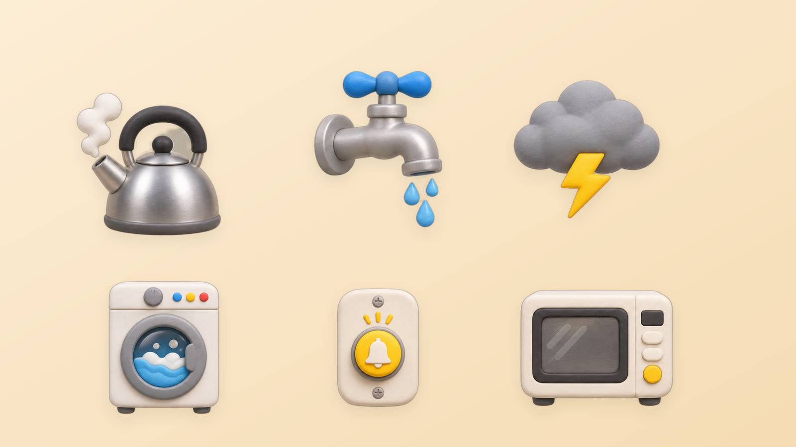

Что звучит? Игра на слуховое внимание: бытовые звуки
Слушаем настоящие звуки: дрель, телефон, дождь, машина, поезд и другие. Ребёнок выбирает картинку, которая так звучит.
ИгратьБесплатно, без регистрации
Что отрабатываем
Игра помогает отрабатывать слуховое внимание: узнаём бытовые звуки. Для малышей и детей, которые пока говорят мало или не говорят.
Из чего состоит игра
- Что звучит дома?Слуховое внимание: узнаём бытовые звуки (дрель, пылесос, дождь, телефон).
- Вода, погода и людиСлуховое внимание: звуки воды, погоды и людей.
- Что звучит на улице?Слуховое внимание: узнаём звуки улицы и животных.
Как играть с ребёнком
Включается звук: ребёнок слушает и показывает на картинку, которая так звучит. Звук можно повторить кнопкой.
Выбор делается пальцем из трёх картинок. Если ошибся, ничего страшного: слушаем ещё раз.
Игра тренирует слуховое внимание: узнавать и различать звуки вокруг.
Это игра, а не экзамен. Занимайтесь 10–15 минут и хвалите за старание. Игра не заменяет консультацию специалиста и не ставит диагноз.

Об авторе
Игры сделала Александра Карачинцева: психолог, поведенческий аналитик (ABA), специалист по запуску речи. Если ребёнок не говорит или говорит мало, можно почитать о запуске речи или написать Александре.